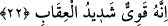

“Onlar,” Mekke müşrikleri, ticâret maksadıyla “yeryüzünde dolaşmadılar mı ki”
Şam (Suriye) ve Yemen taraflarına yolculuğa çıkmadılar mı ki, “kendilerinden
öncekilerin,” peygamberlerini yalancı sayan Âd, Semûd gibi önceki ümmetlerin, ki
bunlar Kureyş’in ticaret yolu üzerinde bulunuyorlardı, “âkıbetinin nasıl olduğunu
görsünler! Onlar kuvvet”; daha fazla güç ve imkan “ve yeryüzünde” sağlam kaleler,
mamur kentler gibi “eserler yönünden bunlardan daha da üstündüler. Allah onları
suçlarıyla yakaladı,” inkâr ve tekzipleri yüzünden onları cezâlandırdı. “Allah’tan,”;
yâni O’nun azâbından “onları koruyan da olmadı.”
22. Bunun sebebi, peygamberleri kendilerine apaçık mûcizeler getirdikleri halde,
inkâr etmeleri idi. Allah da kendilerini tutup yakalayıverdi. Doğrusu O, kuvvetlidir;
azabı da pek çetindir.
Sözü edilen “bu” cezâ ve azâb“ın sebebi, kendilerine açık belgelerle” mûcizelerle
ya da zâhir hükümlerle “gelen peygamberlerini inkâr” ve tekzîb “etmeleridir. Allah
da onları” bunun için âcil bir yakalayışla “yakalayıverdi. Doğrusu O, kuvvetlidir,”
güç ve kudretin zirvesini gerektiren şeylere bile gücü yeter. Şirk ehline olan “azâbı da”
öyle “çetin” öyle şiddetlidir ki O’nun cezalandırmasının yanında hiçbir cezânın adı
bile anılmaz.
Mekkeli müşrikler, önceki kâfirlerin ölüp kaldıkları yerleri müşâhede ettikleri ve
helâk olduklarının eseri mâhiyetindeki kalıntıları görüp durdukları halde, onların başına
gelenin kendi başlarına gelivermeyeceği hususunda kendilerini nasıl güvende
hissedebiliyorlar!?
Mâlûmun olsun ki saâdet ehli, varlık nimetine karşılık olarak Allah’a şükreder. O da
bu nimete îman nimetini ilave eder. İman nimetine şükredince dostluk nimetini ilave
eder. Dostluk nimetine şükrettiklerinde dünyada kendisine yakın olup kendisini tanıma
(kurb ve ma’rifet) nimetini, âhirette de civârında bulunma nimetini ilâve eder. Şakâvet
ehli ise varlık nimetine nankörlük eder. Allah da onlara dünyada minnetsizlik,
uzaklaştırma, kovma ve lânetle mukâbele eder. Âhirette de onlara ateşle ve envâ-i çeşit
azapla azâb eder.
“Bunun sebebi, onların..” ifâdesinde şuna işâret edilir: Bir mürid ve bir Allah
yolcusu maksûduna varamasa şunu bilmeli ki, perdelenip mahrum kalmasına sebep olan
şey, şeyhine veya bazı durumlarda başka şeyhlere karşı gönlünde gizlediği fakat bir
türlü tevbe ve inâbe etmediği itirazdır. Zira şeyhler müridlere göre peygamberler
mesâbesindedir. Bir habere göre, “Kavmi içinde bir şeyh, ümmeti arasındaki bir
peygamber gibidir.”